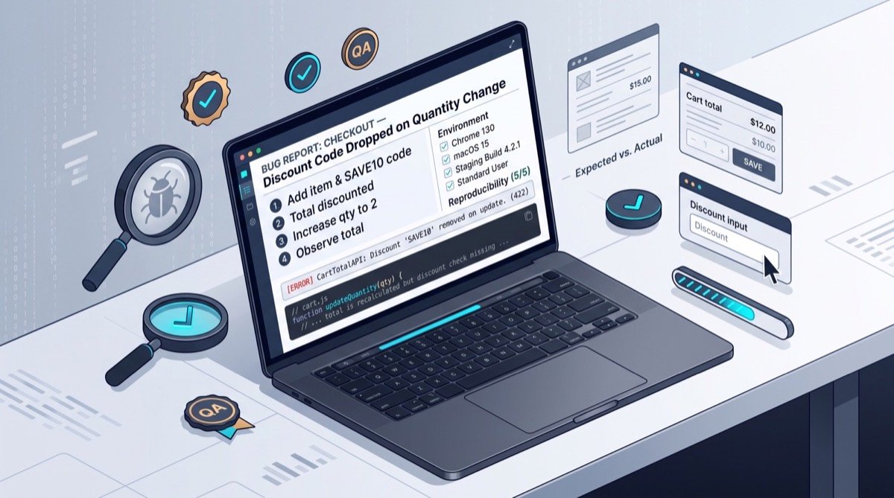

Prijava greške kakvu developeri zaista žele: praktični vodič
Praktična struktura prijave greške koju developer može da reprodukuje i popravi već iz prvog čitanja, uz primjer „prije i poslije".
Prijava greške koja kaže „korpa ne radi" košta više vremena nego što uštedi. Developer koji je dobije mora da pronađe testera, pita koji je browser koristio, pita šta znači „ne radi", pokuša da pogodi korake, i tek onda zaista počne da istražuje. Pomnožite to sa desetak prijava po sprintu i tester sa aljkavom navikom prijavljivanja tiho postaje jedan od sporijih dijelova procesa objave, čak i ako su mu instinkti za pronalaženje grešaka odlični. Rješenje nije više alata — nego struktura prijave koja odgovara na prvih pet pitanja developera prije nego što ih uopšte postavi.

Šta developeru zaista treba, i kojim redom
Kada developer otvori prijavu greške, pokušava da uradi jednu stvar: da što brže reprodukuje problem na svojoj mašini, jer grešku koja se ne može reprodukovati nije moguće debagovati. Sve u dobroj prijavi služi tom cilju, predvidljivim redom:
- Konkretan naslov koji kaže šta se pokvarilo i gdje, a ne kako ste se vi osjećali zbog toga.
- Okruženje — browser i verzija, operativni sistem, uređaj, verzija aplikacije ili broj build-a, nalog/uloga ako je bitno.
- Koraci za reprodukciju, numerisani, počevši od poznatog stanja (a ne „prvo uradi ono uobičajeno").
- Očekivani rezultat naspram stvarnog rezultata, navedeni odvojeno, kako bi bilo jasno da je u pitanju neslaganje, a ne pitanje o funkcionalnosti.
- Dokazi — screenshot, snimak ekrana ili relevantan log iz konzole/mreže.
- Ponovljivost — da li se dešava svaki put ili samo ponekad?
- Ozbiljnost i prioritet, prijavljeni kao dvije odvojene procjene, a ne jedna.
Ozbiljnost i prioritet se češće nego što bi trebalo spoje u jedno polje „koliko je loše", i to je greška: ozbiljnost (severity) opisuje tehnički uticaj (da li ruši aplikaciju, kvari podatke ili samo malo čudno izgleda), dok prioritet opisuje koliko hitno treba da se popravi s obzirom na trenutni poslovni kontekst. Neispravno dugme „podijeli na Twitter" može biti niske ozbiljnosti, ali visokog prioriteta tokom marketinške kampanje; rijedak pad u alatu koji koriste samo administratori može biti visoke ozbiljnosti, ali niskog prioriteta. Prijavljivanje oba kao jedne vrijednosti tjera developera da pogađa šta ste mislili.
Primjer „prije i poslije"
Evo prijave koja tehnički opisuje stvarnu grešku, ali svima troši vrijeme:
Naslov: Checkout ne radi
Opis: Kad pokušam nešto da kupim, iznos je pogrešan. Testirano na mom laptopu. Molim popravite što prije, ovo je loše.
Ništa ovdje nije moguće reprodukovati. „Moj laptop" nije okruženje. „Iznos je pogrešan" nije poređenje očekivanog i stvarnog. Nema naznake da li se dešava svaki put ili se desilo jednom. Evo iste greške, napisane tako da se reprodukuje iz prvog pokušaja:
Naslov: CHECKOUT — Ukupan iznos narudžbe ne uključuje 10% popusta nakon promjene količine
Okruženje: Chrome 130, macOS 15, staging build 4.2.1, prijavljen kao standardni (ne-admin) nalog
Koraci za reprodukciju:
- Dodajte bilo koji artikal u korpu, primijenite kod za popust
SAVE10- Potvrdite da ukupan iznos u korpi uključuje popust od 10%
- Na stranici korpe povećajte količinu artikla sa 1 na 2 pomoću stepera
- Posmatrajte ponovo izračunat ukupan iznos
Očekivani rezultat: Ukupan iznos odražava novu količinu, a popust od 10% je i dalje primijenjen.
Stvarni rezultat: Ukupan iznos odražava novu količinu, ali popust je tiho uklonjen — nema poruke o grešci, niti ikakve naznake da je kod uklonjen.
Ponovljivost: 5/5 pokušaja, i kao gost i kao prijavljeni korisnik.
Dokazi: priložen snimak ekrana (0:08–0:14 pokazuje skok iznosa bez stavke popusta)
Ozbiljnost: Velika (kupcu se tiho naplaćuje više)
Prioritet: Visok (pogađa svaku narudžbu u kojoj se količina mijenja nakon unosa koda za popust)
Sve što developeru treba da počne debagovanje — šta, gdje, kako da to sam vidi i koliko je ozbiljno — nalazi se ovdje, bez ijednog dodatnog pitanja.
Zamke i ograničenja
Čak i dobro strukturirana prijava može da promaši ako pokušava da uradi previše. Spajanje dva nepovezana problema u jednu prijavu („i usput, linkovi u footer-u su pogrešne boje") nameće proizvoljan status obama kada se popravi samo jedan, i otežava čisto zatvaranje prijave — jedna greška po prijavi, uvijek. Pretjerana detaljnost takođe može da se obije o glavu: prijava sa petnaest koraka za reprodukciju zato što niste izolovali minimalnu putanju znači samo da developer mora sam da uradi tu izolaciju, a to je bio posao testera. Izbjegavajte nagađanje o uzroku osim ako niste sigurni — „mora da API pogrešno kešira" je pretpostavka predstavljena kao činjenica, a pretpostavke koje se ispostave kao netačne narušavaju povjerenje u prijavu. I ponovljivost je važnija nego što joj se priznaje: greška koju ste vidjeli jednom i ne možete pouzdano da reprodukujete je drugačija vrsta problema (vrijedi je zabilježiti, ali tako i označiti) od one koja pada svaki put, a miješanje te dvije troši vrijeme istrage na pogrešan prioritet.
Šta dalje
Napišite (ili prilagodite) šablon sa sedam gore navedenih polja i postavite ga kao podrazumijevani u vašem tracker-u, tako da struktura bude put najmanjeg otpora, a ne nešto čega testeri moraju da se sjete. Prije nego što prijavite grešku, pokušajte još jednom da je reprodukujete iz čistog stanja (zatvoreni tabovi, odjava i ponovna prijava ili novi testni nalog) — samo to otkriva iznenađujući broj „grešaka" koje su zapravo bile zastarjelo lokalno stanje. Razdvojite ozbiljnost i prioritet u dva posebna polja ako ih vaš tracker trenutno spaja. I za sve što se dešava povremeno, dodajte napomenu o ponovljivosti („3 od 10 pokušaja") umjesto da to opisujete sa istom sigurnošću kao pouzdan pad — to mijenja čak i to kako developer uopšte treba da pristupi debagovanju.